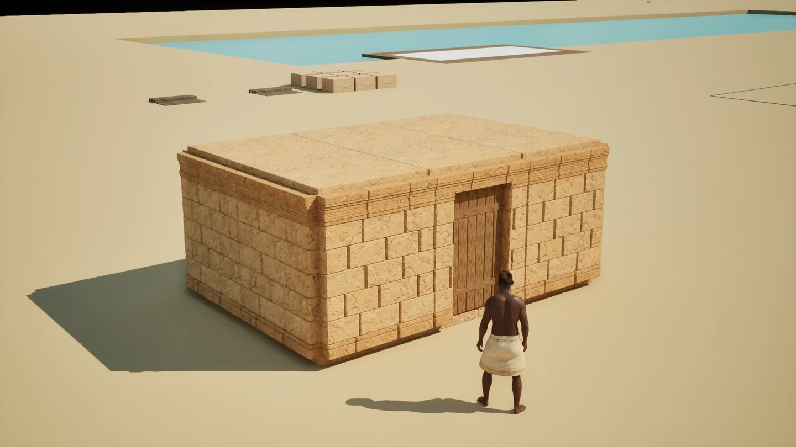

개인 기획·기능 검토 · Unreal Engine 5 · 2026.11.15
피라미드 건설 게임

구현 기능
자원 획득·가공·운송·건설·생활 시스템.
애니메이션
손·도구 접점 불일치로 외부 모션 비교·적용. 접점·전환 보완 중.
운송 · 생활 · 강변 월드


실제 Unreal 프로토타입. 촬영용 카메라·임시 배치 사용, 숲은 안개·노출을 조정해 촬영.
초기 운송 시연 · 에셋 출처
외부 캐릭터·모션·일부 3D 에셋 활용. 인체: Epic MetaHuman Omari.
의복: a9908244, Egyptian style outfits · CC BY · 길이·폭·표면·가중치·린넨 재질 수정.
나무: Incg5764, Acacia Tree · CC BY 4.0 · 크기·재질·충돌·Nanite 설정 수정.